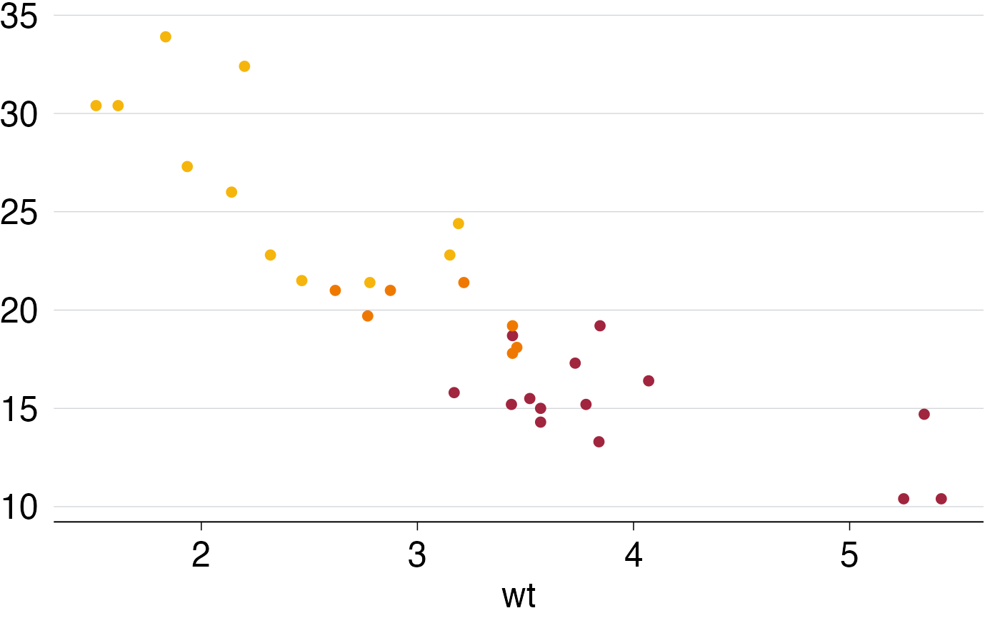

Create a Grattan-appropriate palette for your chart.
grattan_pal.RdCreate a Grattan-appropriate palette for your chart.
grattan_pal(n = 0, reverse = FALSE, faded_level = 0, faded = FALSE)Arguments
- n
Numeric. The number of levels in your colour scale. Minimum value is 1, maximum is 10. Using more than 6 is not recommended. If you don't specify `n`, a five-colour palette will be used, which may not look right. Specify `n`.
By default, n = 2 will give you light orange and dark orange. Use n = "2a" if you want light orange and red.
- reverse
Logical. FALSE by default. Setting to TRUE reverses the standard colour order. Standard colour order runs from light to dark. If you set reverse to TRUE, colours will run from dark to light.
- faded_level
Integer between 0 (no fade; the default) and 8 (most faded).
- faded
Deprecated - use
faded_level. Logical. FALSE by default. Setting to TRUE returns the faded variations of the standard colours. If TRUE andfaded_level = 0, setsfaded_levelto 5.
Examples
library(ggplot2)
p <- ggplot(mtcars, aes(x = wt, y = mpg, col = factor(cyl))) +
geom_point() +
theme_grattan() +
scale_colour_manual(values = grattan_pal(n = 3))
#> Warning: `grattan_pal()` was deprecated in grattantheme 1.0.0.
#> ℹ Please use `make_grattan_pal` or `make_grattan_pal_discrete` instead.
p

# Alternatively, use grattan_colour_manual(), which is a wrapper
# around scale_colour_manual():
p <- ggplot(mtcars, aes(x = wt, y = mpg, col = factor(cyl))) +
geom_point() +
theme_grattan() +
grattan_colour_manual(n = 3)
#> Warning: `grattan_colour_manual()` was deprecated in grattantheme 1.0.0.
#> ℹ `grattan_colour_manual` has been deprecated which means it will no longer be
#> maintained or updated. Please use `scale_colour_grattan` instead.
p